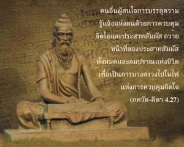
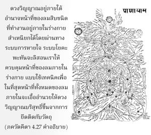

คนอื่นผู้สนใจการบรรลุความรู้แจ้งแห่งตนด้วยการควบคุมจิตใจและประสาทสัมผัส ถวายหน้าที่ของประสาทสัมผัสทั้งหมดและลมปราณแห่งชีวิตเพื่อเป็นการบวงสรวงไปในไฟแห่งการควบคุมจิตใจ


ระบบโยคะที่เริ่มโดย พะทันจะลิ ได้กล่าวไว้ ณ ที่นี้ ใน โยค-สูตฺร ของพะทันจะลิ เรียกดวงวิญญาณว่า ปฺรตฺยคฺ-อาตฺมา และ ปราคฺ-อาตฺมา ตราบใดที่ดวงวิญญาณยึดติดอยู่กับความสุขทางประสาทสัมผัสเรียกว่า ปราคฺ-อาตฺมา แต่ในทันทีที่วิญญาณดวงเดียวกันนี้ไม่ยึดติดกับความสุขทางประสาทสัมผัสเรียกว่า ปฺรตฺยคฺ-อาตฺมา ดวงวิญญาณอยู่ภายใต้อำนาจหน้าที่ของลมสิบชนิดที่ทำงานอยู่ภายในร่างกายสำเหนียกได้โดยผ่านทางระบบการหายใจ ระบบโยคะพะทันจะลิจะสอนเราให้ควบคุมหน้าที่ของลมภายในร่างกายแบบใช้เทคนิค เพื่อในที่สุดหน้าที่ทั้งหมดของลมภายในจะเอื้ออำนวยให้ดวงวิญญาณบริสุทธิ์ขึ้นจากการยึดติดกับวัตถุ ตามระบบโยคะนี้ ปฺรตฺยคฺ-อาตฺมา คือจุดมุ่งหมายสูงสุด ปฺรตฺยคฺ-อาตฺมา นี้ถอนตัวจากกิจกรรมทางวัตถุ การกระทบกันระหว่างอายตนะภายในและอายตนะภายนอก เช่น หูกับการฟังจมูกกับกลิ่น ลิ้นกับรส มือกับสัมผัส ทั้งหมดเป็นการปฏิบัติกิจกรรมนอกตัวเรา เรียกว่าหน้าที่ของ ปฺราณ-วายุ ลม อปาน-วายุ ลงข้างล่าง วฺยาน-วายุ หดตัวและขยายตัว สมาน-วายุ ปรับสมดุล อุทาน-วายุ ขึ้นข้างบน และเมื่อได้รับแสงสว่างเราจะทำทั้งหมดนี้เพื่อค้นหาความรู้แจ้งแห่งตน